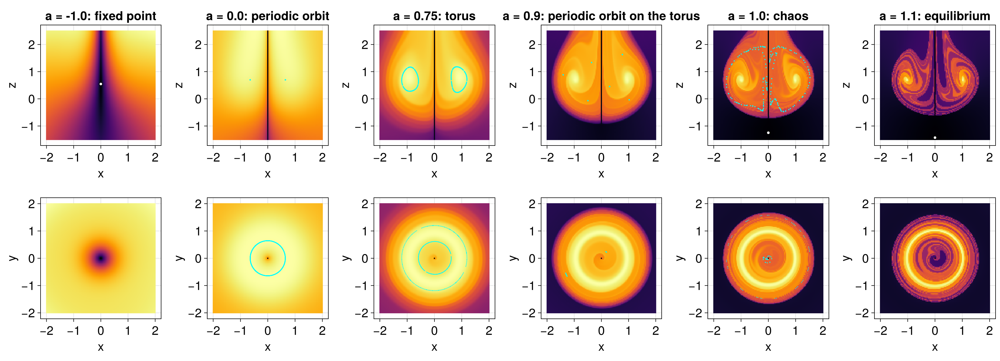

Langford system
The Langford system
\[\begin{cases} \dot x = (z - b) x - d y, \\ \dot y = d x + (z - b) y, \\ \dot z = c + a z - \dfrac{z^3}{3} - (x^2 + y^2)(1 + e z) + f z x^3, \end{cases}\]
introduced by Langford (1984) from a normal form of a simultaneous Hopf and cusp bifurcation, shows a classical route to chaos as the parameter $a$ increases, with $b = 0.7$, $c = 0.6$, $d = 3.5$, $e = 0.25$ and $f = 0.1$, as studied by Fleurantin and Mireles James (2020). The $z$ axis is invariant, and the solutions near it rotate around it, so a plane containing it, here $y = 0$, is a natural section of the dynamics. The periodic orbit lies near the plane $z = b$, which is another natural section, transversal to the axis. The attractor goes through the following stages, which we found with long simulations, from the number of crossings of the attractor with the section $y = 0$ and from its largest Lyapunov exponent:
- for $a$ below about $-0.69$, a fixed point on the $z$ axis, which loses its stability in a Hopf bifurcation;
- up to $a \approx 0.69$, a periodic orbit around the $z$ axis, crossing the section $y = 0$ in two points;
- up to $a \approx 0.80$, an attracting torus, born from the periodic orbit in a Neimark–Sacker bifurcation, crossing the section $y = 0$ along two closed curves, with quasi-periodic solutions;
- up to $a \approx 0.94$, a periodic orbit on the torus, from a resonance of its two frequencies;
- at $a \approx 0.932$, a pair of equilibria is born on the $z$ axis below the attractor, in a saddle-node bifurcation, one of them stable, so that two attractors coexist, each with its own basin of attraction;
- from $a \approx 0.95$, a chaotic attractor, with a positive Lyapunov exponent, with periodic windows, e.g. near $a = 0.97$;
- at $a \approx 1.057$, the chaotic attractor disappears, consistent with a boundary crisis, in which the attractor touches the boundary of its basin, which passes through the other, unstable, equilibrium; beyond it, the solutions go to the stable equilibrium, after a chaotic transient, apart from windows where an attracting periodic orbit coexists with it, e.g. near $a = 1.08$, and at $a = 1.1$ all the solutions off the $z$ axis that we computed go to the stable equilibrium.
All the equilibria are on the $z$ axis, at the real roots of $c + a z - z^3/3 = 0$, with the eigenvalues $z - b \pm i d$ in the directions of $x$ and $y$, and $a - z^2$ along the axis, so they are stable when $z < b$ and $z^2 > a$.
We compute the forward Lagrangian descriptors on grids of the two sections, the vertical section $y = 0$ and the horizontal section $z = b$:
using LagrangianDescriptors, OrdinaryDiffEq, CairoMakie
using LinearAlgebra: norm, eigvals
function langford!(du, u, p, t)
a, b, c, d, e, f = p
x, y, z = u
du[1] = (z - b) * x - d * y
du[2] = d * x + (z - b) * y
du[3] = c + a * z - z^3 / 3 - (x^2 + y^2) * (1 + e * z) + f * z * x^3
end
b = 0.7
parameters(a) = (a, b, 0.6, 3.5, 0.25, 0.1)
M(du, u, p, t) = norm(du)
xs = range(-2, 2, length = 121)
ys = range(-2, 2, length = 121)
zs = range(-1.5, 2.5, length = 121)
vertical = [[x, 0.0, z] for z in zs, x in xs] # the section y = 0
horizontal = [[x, y, b] for y in ys, x in xs] # the section z = b
function lagrangian_descriptors(a, uu0)
prob = ODEProblem(langford!, zeros(3), (0.0, 20.0), parameters(a))
return solve(LagrangianDescriptorProblem(prob, M, uu0; direction = :forward), Tsit5())
endWe also compute the attractor, from a long solution without its transient, with its crossings of the vertical section, by linear interpolation between the saved points, and its points near the horizontal section, since the periodic orbit lies near it, but crosses it in only two points, as well as the stable equilibria:
function attractor(a)
prob = ODEProblem(langford!, [0.1, 0.05, 0.0], (0.0, 1150.0), parameters(a))
return solve(prob, Tsit5(); abstol = 1e-9, reltol = 1e-9, saveat = 1000:0.01:1150).u
end
function crossings(points)
section = Point2f[]
for (u, v) in zip(points[begin:end - 1], points[begin + 1:end])
if u[2] * v[2] < 0
s = u[2] / (u[2] - v[2])
push!(section, Point2f(u[1] + s * (v[1] - u[1]), u[3] + s * (v[3] - u[3])))
end
end
return section
end
near_horizontal(points) = [Point2f(u[1], u[2]) for u in points if abs(u[3] - b) < 0.02]
# the stable equilibria, at the real roots of c + a z - z^3/3 with z < b and z^2 > a
function stable_equilibria(a)
c = parameters(a)[3]
roots = [real(z) for z in eigvals([0 1 0; 0 0 1; 3c 3a 0]) if abs(imag(z)) < 1e-9]
return [Point3f(0, 0, z) for z in roots if z < b && z^2 > a]
endThe Lagrangian descriptors at a value of $a$ in each stage, on the vertical section in the first row and on the horizontal one in the second row, with the attractor in cyan and the stable equilibria in white:
stages = [-1.0 => "fixed point", 0.0 => "periodic orbit", 0.75 => "torus", 0.9 => "periodic orbit on the torus",
1.0 => "chaos", 1.1 => "equilibrium"]
fig = Figure(size = (1800, 650))
for (k, (a, stage)) in enumerate(stages)
points = attractor(a)
ax = Axis(fig[1, k]; title = "a = $a: $stage", xlabel = "x", ylabel = "z", aspect = DataAspect())
heatmap!(ax, lagrangian_descriptors(a, vertical); idxs = (1, 3))
scatter!(ax, crossings(points); color = :cyan, markersize = 3)
scatter!(ax, [Point2f(p[1], p[3]) for p in stable_equilibria(a)]; color = :white, strokecolor = :black, strokewidth = 1, markersize = 8)
ax = Axis(fig[2, k]; xlabel = "x", ylabel = "y", aspect = DataAspect())
heatmap!(ax, lagrangian_descriptors(a, horizontal))
scatter!(ax, near_horizontal(points); color = :cyan, markersize = 2)
end
fig
In the vertical section, the dark vertical line is the $z$ axis, which is invariant, and in the horizontal one, the dark point at the center. As the attractor grows from the fixed point into the torus and the chaotic attractor, the descriptors develop finer and finer folds around it, along which the nearby solutions are drawn into the attractor, with spirals in the horizontal section, from the rotation around the axis. From $a \approx 0.932$, the solutions in the dark region of the vertical section, outside the bulb around the attractor, go to the stable equilibrium below it: at $a = 1$, about half of the initial conditions of the section. After the chaotic attractor disappears, the descriptors keep its folds, along which the solutions linger in a chaotic transient before going to the stable equilibrium.
A sweep of the parameter
The video shows the sweep of $a$, in smaller and smaller steps as the dynamics get more complicated, until after the chaotic attractor disappears, with the attractor, the stable equilibria and the two sections on the left, and the Lagrangian descriptors on each section on the right, with the colors scaled to each section and frame:
avalues = [-1.0:0.1:0.6; 0.62:0.02:0.8; 0.81:0.01:0.93; 0.935:0.005:1.055; [1.06, 1.07, 1.08, 1.1]]
attractors = [attractor(a) for a in avalues]
vertical_descriptors = [lagrangian_descriptors(a, vertical) for a in avalues]
horizontal_descriptors = [lagrangian_descriptors(a, horizontal) for a in avalues]The two planes divide the space into four parts. Since CairoMakie draws each plot over the previous ones, the parts of the attractor and the halves of the planes are drawn from the farthest to the nearest, for the default view of Axis3, from $y < 0$ and from above, with NaN to break the lines of the attractor:
k = Observable(1) # the index of the value of `a` in the frame
# the part of the attractor on the side `side_y` of the plane y = 0 and `side_z` of the plane z = b
part(points, side_y, side_z) = [sign(u[2]) == side_y && sign(u[3] - b) == side_z ? Point3f(u) : Point3f(NaN) for u in points]
equilibria = @lift(stable_equilibria(avalues[$k]))
vertical_color = (:orange, 0.35)
horizontal_color = (:dodgerblue, 0.3)
fig = Figure(size = (1500, 500))
ax3 = Axis3(fig[1, 1]; title = @lift("a = $(round(avalues[$k], digits = 3))"), xlabel = "x", ylabel = "y", zlabel = "z",
limits = (-2, 2, -2, 2, -1.5, 2.5), viewmode = :fit, xticks = -2:2:2, yticks = -2:2:2, zticks = -1:2)
attractor_part(side_y, side_z) = lines!(ax3, @lift(part(attractors[$k], side_y, side_z)); color = :gray30, linewidth = 0.5)
attractor_part(1, -1) # behind and below
mesh!(ax3, Rect3f(Vec3f(-2, 0, b - 0.01), Vec3f(4, 2, 0.02)); color = horizontal_color, shading = false)
attractor_part(1, 1) # behind and above
mesh!(ax3, Rect3f(Vec3f(-2, -0.01, -1.5), Vec3f(4, 0.02, b + 1.5)); color = vertical_color, shading = false)
mesh!(ax3, Rect3f(Vec3f(-2, -0.01, b), Vec3f(4, 0.02, 2.5 - b)); color = vertical_color, shading = false)
attractor_part(-1, -1) # in front and below
mesh!(ax3, Rect3f(Vec3f(-2, -2, b - 0.01), Vec3f(4, 2, 0.02)); color = horizontal_color, shading = false)
attractor_part(-1, 1) # in front and above
scatter!(ax3, equilibria; color = :black, markersize = 10)
ax = Axis(fig[1, 2]; title = "section y = 0 (orange)", xlabel = "x", ylabel = "z", aspect = DataAspect())
heatmap!(ax, @lift(vertical_descriptors[$k]); idxs = (1, 3))
scatter!(ax, @lift(crossings(attractors[$k])); color = :cyan, markersize = 3)
scatter!(ax, @lift([Point2f(p[1], p[3]) for p in $equilibria]); color = :white, strokecolor = :black, strokewidth = 1, markersize = 8)
ax = Axis(fig[1, 3]; title = "section z = $b (blue)", xlabel = "x", ylabel = "y", aspect = DataAspect())
heatmap!(ax, @lift(horizontal_descriptors[$k]))
scatter!(ax, @lift(near_horizontal(attractors[$k])); color = :cyan, markersize = 2)
# the frames, with a pause at the end
frames = [eachindex(avalues); fill(lastindex(avalues), 8)]
record(fig, "langford.mp4", frames; framerate = 5, px_per_unit = 1) do i
k[] = i
end